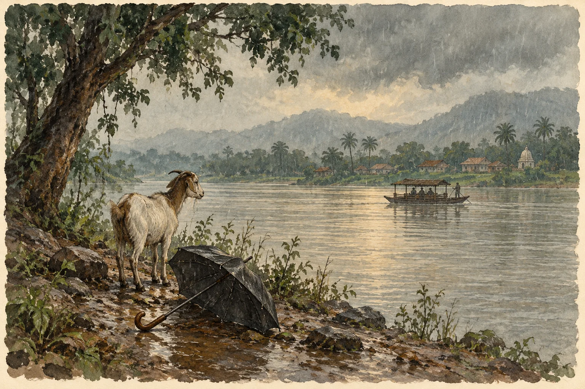

मूल कविता · ଓଡ଼ିଆ
ତଅପୋଇ ଓ ବୁଢ଼ା ବଳଙ୍ଗ

**
ଭଙ୍ଗା କଳାକନା ବଙ୍କୁଲିବେଣ୍ଟ ଛତା ଉପରେ ଭାରଦେଇ ଠିଆ ହେବ କେତେ
ନା ଧାଇଁବ,
ଏ ଛେଳିପଲ ପଛରେ
ଏ ଯେମିତି,
ଦି ଛୁଆ କାଦୁଅ ଦଳି, କଣ୍ଟିଆ ମାଛ ଦଳି
ମାଡ଼ିଗଲେ ରୁଆ ଧାନ ଉପରେ
କେଉଁ ଅମଡ଼ା ବୁଦା କାନି ଫୁଟିଲା ଭଦୁଆଁ ଛତୁ ଯେ,
ଆଗଭର ହେଇ ଘୋଟି ଆଇଲା
କଳା ହାଣ୍ଡିଆ ମେଘ
କହିଲା -
ଥିବୁ ତ ଥା,
ଯିବୁ ବା କୁଆଡେ଼?
ତୋ ପୋଟଳ-ଚିରା ଆଖି କି
ତୋ ଆଣ୍ଠୁ ଉଁଚ ତାଳି-ପକା ଲୁଗା
ତୋ ଟାଆଁଶା କରଡ଼ା ଚୁଟି କି
ତୋ ବରଡ଼ା ଛାଉଣି ଛିଟାବାଡ଼ ଘର..
ଏତକ କୁ କେଉଁ ବିଜୁଳି ଅଚିହ୍ନା ଯେ !
ରାସ୍ତା ବୋଇଲେ ସେଇ ଗୋଟିକ -
ଅଣଓସାରିଆ ଚଲାବାଟ
ଯେ ଚିଙ୍ଗୁଡ଼ି ଘେରିରୁ ପଶିଲା, ଉଠିଲା ପାନବରଜଠିଁ
ଗାଆଁ ଦାଣ୍ଡକୁ ଚିରି ଏକମୁହାଁ
ମୁହାଁଇ ଚାଲିଲା ଯେ,
ଭାଗ୍ୟ ମୁଣ୍ଡ ବିକି ଚାଲିଲା ପରି
ପାରିକଲା କିଆବୁଦା, ନାଗଫେଣି କଣ୍ଟାବଣ
ଫିଟିଲା ଯାଇଁ
ଏ ମଶାଣି ଗଦା ଝାଉଁତଳ,
ଏ ପରା ଘରମଣିର ଚରାଭୂଇଁ !
ବହାବଳପୁର, ରଙ୍ଗାମାଟିଆ ସ୍କୁଲ୍ ଛକ ଖୋଜି
ଆସନ୍ତାନି ଖଲାସି କେହି
କହନ୍ତା,
“ଆଲୋ ଏ,
ତୋ ଘରମଣିକି କାଖେଇ ବାହିରି ପଡ଼ ସଅଳ!
ତୁ ଆସ, ପୁରୁଣା ଖଣ୍ଡଇଟାପୋଲ ଯାଏଁ
ସେଠୁଁ ସେଠିକି ଆଶା ଉଜଳ
ସବୁ ସହଜ, ସବୁ ସରଳ..
ସବୁଜ ହରିଆଲି ବୁଢ଼ାବଳଙ୍ଗରେ ନାଖିଚି ଡଙ୍ଗା
ଖାସ୍ ତୋତେ ନେବା ପାଇଁ !!...”
**
_ଶକୁନ୍ତଳା
मूल प्रकाशन पढ़ें ↗
कविताएँ अपनी मूल भाषा में हैं। भाषा चुनने से वेबसाइट का परिचय और निर्देश बदलते हैं।